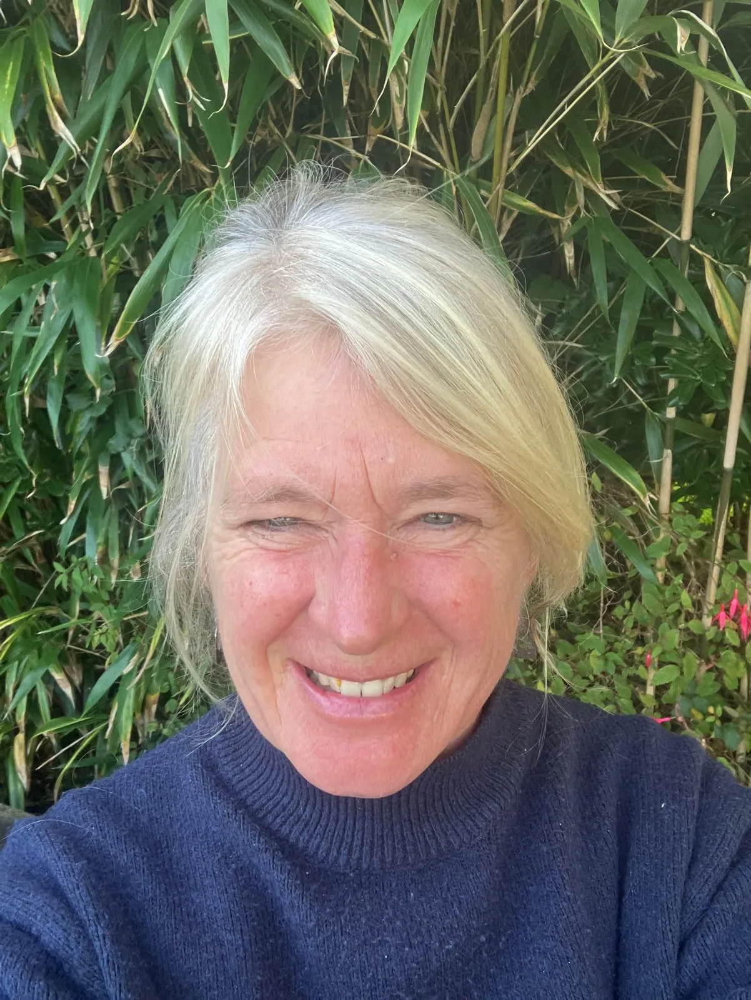
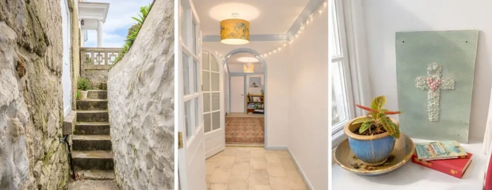

We've Seen What
Burnout Does
Restore By The Shore is the vision of Kate Poole and supported by her husband Gavin. They are a Christian couple living above a modest garden flat in Penzance, Cornwall. Having watched dear friends, vicars, youth workers, clergymen, and charity staff give everything they have to the work of Jesus and quietly fall apart, they want to offer a place of rest and renewal to those serving the Christian faith.

They have opened their lower level garden flat for those who are feeling the weight of their work in the name of Jesus to stay and rest. It's not a hotel, it is a family home, and it carries all the warmth and imperfection that comes with that. We hope that's exactly what you need to find your strength again.
Kate loves people and values getting to know the stories behind the work people do. She cares deeply about helping others, especially those who spend their lives caring for everyone else. Sometimes the Christian church can ask a great deal of the people who are serving most faithfully, and those same people do not always receive the support or rest they need themselves. Kate's faith is very important to her, and she feels a deep sense of gratitude for where she lives and the position she finds herself in. Opening this space feels like a small way she can share that blessing and offer rest to those who need it.
This Place is for You If...
You are employed by, or volunteering with, a Christian organisation or registered charity (evidence required), and you are facing or recovering from burnout. Whether you are a vicar, curate, youth pastor, worship leader, or other servant within the church or a Christian faith-based organisation, and if the work has taken more than you had to give, you are welcome here.
Our Faith and Our Mission
We believe rest is not a luxury, it is a necessity. Jesus withdrew to quiet places. We want to make it easier for those who serve Him to do the same.
Our hope is to offer a safe, welcoming, and peaceful space where those who have given so much in the service of others can come and simply be for a while. We also recognise that cost can often be a barrier to taking time out, so we aim to keep the stay affordable.
A Real Home
Please come with open arms and realistic expectations. The flat is clean, comfortable, and well cared for, but it is a real and lived-in home rather than a hotel.
We are located in a quiet residential area just a five-minute walk from Penzance town. During your stay, we simply ask that you respect our neighbours and the local community.
We do not provide meals or room service, but the flat has a small kitchen where you are welcome to prepare your own food. Our intention is simply to share a peaceful space with you where you can rest.
Limited Accessibility
The lower-level garden flat is all on one level once inside, with just a small step into the living area. However, we live in a characterful late Victorian Cornish terrace, and access to the flat is via a flight of steep and very narrow old stone stairs. We want to be transparent about this so there are no surprises on arrival.

Unfortunately this means we are currently unable to accommodate guests with mobility difficulties, and we are very sorry for this limitation.
Getting to Us
We are conveniently located close to Penzance train station, and travelling by train is often the easiest way to reach us. We warmly encourage guests to arrive by public transport where possible, and we are very happy to offer a complimentary pick-up from Penzance train station or bus station by prior arrangement.
We are unable to offer parking. There is free unrestricted on-street parking available on neighbouring streets, though they are quite narrow, as is common with many roads in Cornwall.
Self-Catered and
Simply Peaceful
This two-bedroom, self-catered garden flat serves as a peaceful sanctuary for rest and reflection. Occupying the lower level of our home, the space is entirely your own and you will have full privacy. We are here if you need anything, including offering company or prayer, but we will not intrude on your rest.
Tea, Coffee and Milk Provided
We'll make sure the basics are there waiting for you on arrival. All other food is self-catered and can be prepared in the equipped kitchen. There are local shops and restaurants nearby.
Wi-Fi Included - No TV
There's no television here, and we think that's a gift. Bring your own devices and stay connected if you need to, but there's no television in the accommodation. We have books and games available for you.
Families Welcome
Partners and up to two children are welcome to join you for the stay. The flat has one double bedroom and one twin room, allowing space for a family of four.
One Well-Behaved Dog Welcome
We love dogs. A well-behaved companion is very welcome but please let us know in advance.
Enclosed Garden
There is a lovely enclosed garden at the front of the property that you are welcome to sit in and enjoy.
The Last Stop Before the Sea
Penzance is the most south-westerly town in mainland Britain. Step outside and the Atlantic is right there. We find the Cornish coast can restore perspective, and our hope is that it might do the same for you.
Penzance, West Cornwall
Restore by the Shore is a true ocean of calm positioned in the seaside town of Penzance. Everything here moves a little slower, the air smells of salt, and the light on the sea in the evening is something you won't easily forget. We can arrange days out together, but we also want to give you the freedom to explore the area at your own pace. Here are some of our favourite local attractions and activities that we think you might enjoy during your stay.
Penzance Promenade
A long, beautiful seafront walk and next to the UK's largest seawater pool, Jubilee Pool which is a degree or two warmer than the sea, and geothermal pool, reaching temperatures between 28-30 degrees.
Marazion
Marazion is a small and picturesque seaside town which looks out onto Mounts Bay and St Michaels Mount. St Michaels Mount is an iconic tidal island with a medieval castle, reachable on foot at low tide or by small ferry from Marazion. You can see St Michaels Mount in the distance from our garden.
Land's End
Just 10 miles away is the end of mainland Britain. Stand at the cliff's edge and feel the scale of things. Nearby is the Minack Theatre, an extraordinary open-air theatre carved into the cliffs at Porthcurno with the Atlantic as your backdrop for live performances.
Trengwainton Garden
A sheltered National Trust garden just outside Penzance, famous for its subtropical plants and tranquil woodland walks. Beautiful at any time of year.
Newlyn Harbour
We are blessed with fresh fish from Newlyn harbour, proper Cornish pasties, and Newlyn Art Gallery. The gallery celebrates the extrodinary quality of the Atlantic light beautifully.
Coastal Path Walking
The South West Coast Path runs right through Penzance and offers the chance to walk the cliffs, listen to the sea, and go at whatever pace you choose.
Find Us in Penzance
We are located in a quiet residential area just a five-minute walk from Penzance town.
We will confirm the address with you when you book, and we are very happy to offer a complimentary pick-up from Penzance train station or bus station by prior arrangement.
We'd Love to
Hear From You
Tell us a little about yourself and your situation. We read every message personally and will always reply with warmth. There is no application process but we will want to have a conversation first to check if we're a good fit for each other.